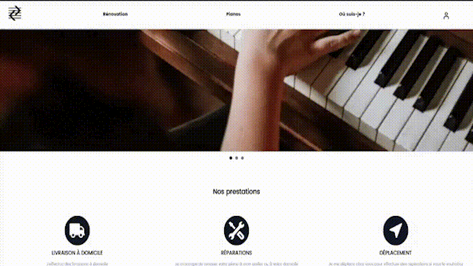
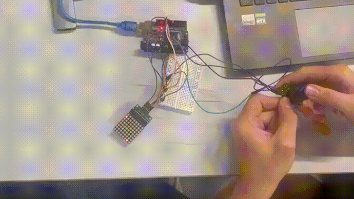

Présentation des Projets
Projet : Mousdik Pianos

Ce projet a été réalisé lors de ma 2ème année à l'IIM pour un client, M. Mousdik.
Nous étions une équipe de 10 personnes, dont 3 développeurs, 4 designers, 1 marketing et 2 chefs de projet.
Nous devions réaliser un site web adapté pour un client qui souhaitait digitaliser son travail.
Nous avons donc réalisé un Wordpress pour lui permettre d'ajouter ses pianos depuis l'interface administrateur.
Nous avons donc travaillé en équipe avec des personnes aux compétences variées pour proposer un site adapté aux attentes du client.

1
Ce projet a été réalisé lors de ma 2ème année à l'IIM pour un client, M. Mousdik.
Nous étions une équipe de 10 personnes, dont 3 développeurs, 4 designers, 1 marketing et 2 chefs de projet.
Nous devions réaliser un site web adapté pour un client qui souhaitait digitaliser son travail.
Nous avons donc réalisé un Wordpress pour lui permettre d'ajouter ses pianos depuis l'interface administrateur.
Nous avons donc travaillé en équipe avec des personnes aux compétences variées pour proposer un site adapté aux attentes du client.
1
Projet : Violon France

Ce projet est une initiative personnelle de création de site e-commerce
J'ai eu l'idée avec un ami de créer un site de vente de produits autour du violon car il y en avait trop peu sur le marché.
Nous avons donc ajouté des produits que nous avons sélectionnés afin de les vendre sur notre site.
Le but pour moi était de découvrir comment fonctionne la création d'un site e-commerce, la gestion de clients et de stock, ainsi que le marketing pour promouvoir notre marque.
C'est un projet à long terme auquel on apportera de nombreuses modifications et améliorations avec le temps.
2
Ce projet est une initiative personnelle de création de site e-commerce
J'ai eu l'idée avec un ami de créer un site de vente de produits autour du violon car il y en avait trop peu sur le marché.
Nous avons donc ajouté des produits que nous avons sélectionnés afin de les vendre sur notre site.
Le but pour moi était de découvrir comment fonctionne la création d'un site e-commerce, la gestion de clients et de stock, ainsi que le marketing pour promouvoir notre marque.
C'est un projet à long terme auquel on apportera de nombreuses modifications et améliorations avec le temps.
2
Projet : WikiFilm
Ce projet réalisé lors de l'année 2 avait pour but d'utiliser une API nommée "TheMoviesDB".
Nous étions 2 sur ce projet et devions réaliser un site répertoriant des films et avoir la possibilité de les triés
On peut donc modifier la requete API en fonction de ce que l'utilisateur nous demande pour donné des film avec un certains genre, une certaine note, une limite d'age ...
L'utilisateur peut se connecter a son compte et peut ajouter des films a ses albums.
Le site utilise axios pour permettre a l'utilisateur qui recherche un film, d'actualisé la page a chaque lettre entré dans la barre de recherche.
Axios n'est pas disponible sur la version web.
3
Ce projet réalisé lors de l'année 2 avait pour but d'utiliser une API nommée "TheMoviesDB".
Nous étions 2 sur ce projet et devions réaliser un site répertoriant des films et avoir la possibilité de les triés
On peut donc modifier la requete API en fonction de ce que l'utilisateur nous demande pour donné des film avec un certains genre, une certaine note, une limite d'age ...
L'utilisateur peut se connecter a son compte et peut ajouter des films a ses albums.
Le site utilise axios pour permettre a l'utilisateur qui recherche un film, d'actualisé la page a chaque lettre entré dans la barre de recherche.
Axios n'est pas disponible sur la version web.
3
Projet : Snake Arduino

Ce projet réalisé lors de l'année 2 avait pour but d'utiliser C++ et des Arduino.
Nous avons eu l'idée de créer le jeu Snake grace à un panneau LED, un joystick et un Arduino.
Le code du jeu Snake est injecté dans l'Arduino avec un cable USB puis l'Arduino fait la liaison avec le joystick et le panneau LED.
Si vous souhaitez essayer de jouer à Snake comme dans ce projet, vous pouvez suivre le schéma pour les branchements sur le git ci-dessous.
4
Ce projet réalisé lors de l'année 2 avait pour but d'utiliser C++ et des Arduino.
Nous avons eu l'idée de créer le jeu Snake grace à un panneau LED, un joystick et un Arduino.
Le code du jeu Snake est injecté dans l'Arduino avec un cable USB puis l'Arduino fait la liaison avec le joystick et le panneau LED.
Si vous souhaitez essayer de jouer à Snake comme dans ce projet, vous pouvez suivre le schéma pour les branchements sur le git ci-dessous.
4
Projet : Arc de triomphe
Ce projet est collaboratif avec le reste de ma promotion.
Le but était de choisir un monument à Paris et de créer un site pour le présenter en utilisant SCSS.
Une fois que chaque étudiant a créé son site qui présente son monument, nous les mettons en commun pour créer un site qui répertorie les monuments de Paris sur une carte avec la possibilité d'accéder au site créé par les étudiants.
J'ai donc présenté l'Arc de Triomphe avec une page d'accueil, une page d'histoire, une page d'actualités, et une page de galerie de photos.
5
Projet : Pokemon

Ce projet réalisé lors de l'année 2 avait pour but d'utiliser une API nommée "PokeApi".
Nous devions récupérer des données depuis cette API et utiliser JavaScript de manière originale pour exploiter ces données.
Nous avons donc introduit des mécaniques comme des QTE qui apparaissent lorsque l'on essaie de capturer un Pokémon.
Le but du jeu étant de capturer les Pokémon que l'on souhaite en faisant un drag & drop sur notre Pokéball vers un Pokémon.
Après le QTE, votre Pokémon est dans votre boîte de stockage qui est liée à votre compte.
6
Ce projet réalisé lors de l'année 2 avait pour but d'utiliser une API nommée "PokeApi".
Nous devions récupérer des données depuis cette API et utiliser JavaScript de manière originale pour exploiter ces données.
Nous avons donc introduit des mécaniques comme des QTE qui apparaissent lorsque l'on essaie de capturer un Pokémon.
Le but du jeu étant de capturer les Pokémon que l'on souhaite en faisant un drag & drop sur notre Pokéball vers un Pokémon.
Après le QTE, votre Pokémon est dans votre boîte de stockage qui est liée à votre compte.
6
Projet : VueJs Téléphone
Ce projet réalisé lors de l'année 2 avait pour but de nous initier à VueJs
Nous devions recréer le fonctionnement d'un téléphone en possédant un onglet Journal d'appel, Contacts et Clavier.
Pour composer un numéro, nous ne pouvions pas utiliser de champ de texte mais uniquement des boutons.
Lorsque un numéro est renseigné dans l'onglet clavier, le script vérifie s'il existe dans la page Contacts.
Enfin, le journal d'appel répertorie le nom du correspondant (ou le numéro s'il n'est pas connu de la page Contacts) et la date de l'appel.
7
Ce projet réalisé lors de l'année 2 avait pour but de nous initier à VueJs
Nous devions recréer le fonctionnement d'un téléphone en possédant un onglet Journal d'appel, Contacts et Clavier.
Pour composer un numéro, nous ne pouvions pas utiliser de champ de texte mais uniquement des boutons.
Lorsque un numéro est renseigné dans l'onglet clavier, le script vérifie s'il existe dans la page Contacts.
Enfin, le journal d'appel répertorie le nom du correspondant (ou le numéro s'il n'est pas connu de la page Contacts) et la date de l'appel.
7
Projet : Twitter
Ce projet d'année 1 avait pour but de recréer Twitter.
Nous devions nous familiariser avec les requêtes SQL et la gestion de bases de données.
On peut donc ajouter un nouvel utilisateur et des nouveaux tweets.
Il y a aussi la possibilité de rechercher des tweets et de les supprimer.
8
Projet : VR EDU
Ce projet d'année 1 avait pour but de créer un site et une marque autour de l'univers du VR.
J'ai donc eu l'idée de VR EDU qui permet aux écoles du collège, lycée et des études supérieures d'avoir un support de cours virtuel.
J'ai donc créé une page vitrine pour présenter la marque, une page blog pour connaître l'actualité de la marque et une page de présentation du service.
Le site a donc une base de données qui enregistre les utilisateurs, les commentaires et les articles de blog.
En se connectant en tant qu'admin, vous accédez à une version du site dans laquelle vous pouvez éditer les articles du blog.
Je n'ai malheuresement plus acces a la BDD de ce projet donc les fonctionnalités l'impliquant se seront pas disponible.
9
Ce projet d'année 1 avait pour but de créer un site et une marque autour de l'univers du VR.
J'ai donc eu l'idée de VR EDU qui permet aux écoles du collège, lycée et des études supérieures d'avoir un support de cours virtuel.
J'ai donc créé une page vitrine pour présenter la marque, une page blog pour connaître l'actualité de la marque et une page de présentation du service.
Le site a donc une base de données qui enregistre les utilisateurs, les commentaires et les articles de blog.
En se connectant en tant qu'admin, vous accédez à une version du site dans laquelle vous pouvez éditer les articles du blog.
Je n'ai malheuresement plus acces a la BDD de ce projet donc les fonctionnalités l'impliquant se seront pas disponible.
9